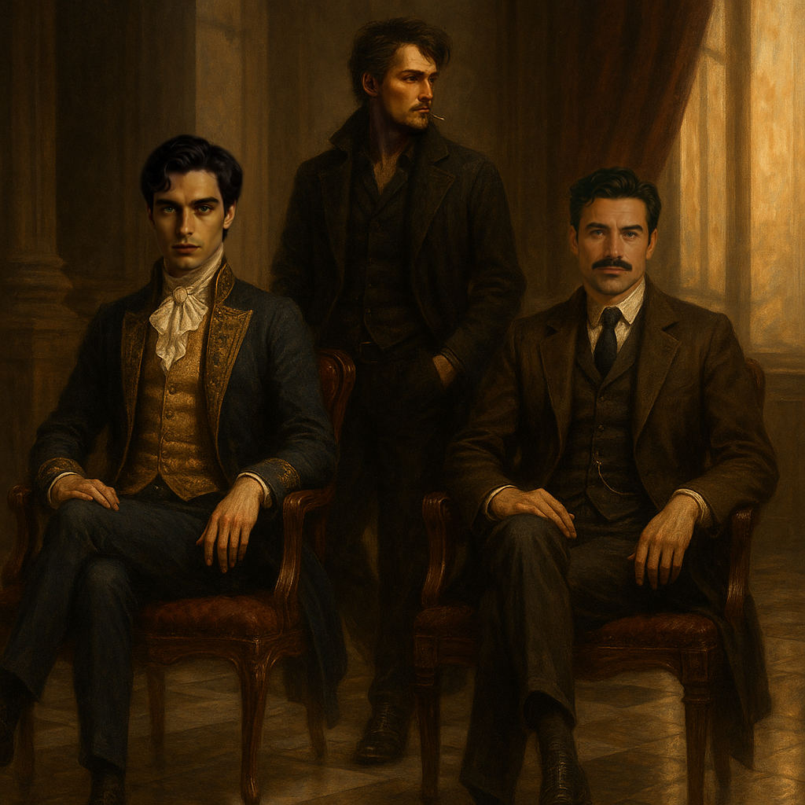

The world was silent.
So silent, even the grass whispered. Each blade of grass swayed with the wind, its movement faint yet loud in the heavy quiet.
In the hollow of a bole, ancient tree, a small boy sat curled into himself. His knees drawn tight to his chest, stashing his dark curls head, his tiny hands covered over his ears, as though trying to block out something. He didn’t know how long he had been like that. Minutes? Hours? Days?
But something inside him stirred—some flickering bravery—and slowly, he lifted his head.
The first thing he saw was… nothing.
stretched far and wide. No voices. No footsteps. No birdsong. Only the wind.Tears stung his eyes. A raw, bloody cut mA sky, endless and gray, weighed down with heavy clouds. Beneath it, an ocean of green grass arked his left cheek, dried crimson flaking at the edges. His small chest rose and fell too quickly, but the emptiness in front of him gave him no answers. It felt wrong. All of it felt wrong.He couldn’t stay hidden anymore.
With trembling limbs, he climbed out from the hollow and placed a hand on the coarse bark of the tree. Then he looked forward.
And his world changed.His tear-filled eyes went wide. The color drained from his face.
He was not alone.
Across the open field, scattered like broken dolls, lay others—people.
But none of them were moving.
None of them were breathing.
They were all dead.
Some of them were missing heads.
Others had no legs—only torsos twisted unnaturally over the grass.
There were at least thirty bodies, maybe more. Lifeless. Scattered. Broken.
The boy froze, his breath caught somewhere between a scream and silence. His legs refused to move, but his eyes—wide and full of horror—locked onto one figure.
It was her.
His mother.
Or, at least, half of her.
Only her upper body remained.
The boy’s heart pounded violently in his chest as he stumbled forward, limbs shaking, mouth open but wordless.
Then—her eyes opened.
And her hand reached out, grabbing his wrist with surprising strength.
He gasped, nearly falling backward. Her grip was cold, but alive. Her wrist was marked with something—an inked symbol etched into the skin. A tattoo, strange and sharp,
shaped like something not meant to be remembered.
But he had same tattoo on his wrist too. Not only him, all of dead body had.
“Run,” she whispered.
And the world shattered.
He woke up choking on his own breath and lying on bed.
Sweat soaked his skin, his chest rose and fell in ragged rhythm, but the only sound now was the gentle breeze sliding through the half-open window beside his bed. The sun was raising now.
No blood. No grass. No bodies.
But also—no mother.
He sat up, elbows resting on his knees, hands covering his face.
It had been twenty-three years.
He was twenty-eight now, He called himself “Goth” but that moment—that field, that voice, that tattoo—still haunted him like it had happened yesterday.
He had run alone ever since. Through life. Through grief. Through unanswered questions.
He’d taught himself how to stand, how to survive. And eventually, he had found a job close to him.
Morning came like always—quiet and gray. He lived far from the town, away from people, simply because he disliked crowds and their curious eyes. Goth rose without alarm, like clockwork. He washed his face in the cold water, wiped it dry with a shirt sleeve, and chewed the last piece of stale bread from the night before. Food didn’t matter much to him. But one thing did matter.
The cat.
A sleek, black-furred tom with deep green eyes, lounging across the sofa like he owned the place. Goth had never named him. He simply called him “Cat.” The way he’d found him had been normal either—just a quiet evening, an alley. He picked him up and brought him home. So the silence wasn’t absolute.
But today was different.
Today, he wasn’t alone.
There was a guest.
An old man sat in the only chair in the room, cigarette glowing between his fingers, smoke curling like ghosts in the dim air. Goth stood with his back to him, posture tense. There was no surprise in his eyes. He merely looked at him—covetous, rapacious—just like the other. He half-turned his head, his voice low and flat.
“I don’t talk about my job at home.”
The old man laughed—a sharp, cracked sound. “Home?”
He glanced around the bare room: one bed, one chair, one sofa for the cat, and a blackboard scribbled with job schedules and names. “You call this a home?”
Goth didn’t answer. He picked up a folded paper from the blackboard and began reading. His guest, said softly, “You’re the Marked Man?
Goth turned to face him, eyes calm but hollow.
“Was it that obvious?”and He pulled a cigarette from his pocket, tapped it once against his palm.He inhaled deeply, exhaling a thin stream of smoke into the heavy silence.
The name had followed him for years now.
The Marked Man.
A title born from blood.
“I’ve got a job for you,” the old man said, leaning forward. “But you have to kill how I command. No questions.”
Goth didn’t even blink.
“Then do it yourself,” he muttered.
“I’m not planning a birthday party.”He slipped on his coat, adjusted the collar.Without a word, he pushed the door open and stepped outside.
But the man wasn’t finished.
“I can pay you more,” he said. His boots creaked as he walked out the door like he already owned the answer. Outside, his horse waited.
Of course—Goth’s job wasn’t a postman.
He killed.
In detail.
For money.
He was a bounty hunter, yes—but not the kind with honor and law behind him. He ran with his grief and lived on violence. He thought he had escaped the grip of his traumatic childhood, but it hadn’t let him go.Something dark had taken root. Something that didn’t die.
He loved the sight of wounds. Blood didn’t scare him. It comforted him.He didn’t enjoy killing. But he didn’t hate it either.
He started small: beating people up for cash. Then stabbing. Then taking heads. Now, even dictators wanted him for private matters. And the police? They didn’t dare get involved.
There was a party. A high-class affair, glittering with money and perfume. Wealthy people in silk and satin paraded beneath golden chandeliers. Goth stood at the edge of the highland above the venue, a crossbow in his hand. His target: a man in the center of the crowd. The happiest man in that party. Nobody knew what he had done. But someone wanted him gone. Goth had been paid in full. Still, the crowd made it impossible to get a clear shot. Movement, laughter, dancing—all in the way.
He couldn’t wait.So he walked in.Confident. Casual. He took a cup of tea from a silver tray and smiled at an old woman, even made polite small talk. Then, straight toward the target. The man smiled. “Do I know you?” Goth leaned close and whispered, “Congratulations.” “What—?”Too late. The knife slid from Goth’s coat. One quick motion—into the belly, slicing deep and quick.
He let the blade go. His gloves kept his fingerprints clean. Then, turning to a waiter, he gestured toward the collapsing man. “Look!” he shouted. “Something’s wrong!” The crowd turned. Screams rose. Panic spread. Goth was already gone, vanishing into the chaos like a shadow never meant to be seen.
That was his way.
His work.His survival.
Some people survive life by clawing their way through struggle and despair.
Others—drift through it, untouched, as if born onto beds of fleece and gold-threaded carpets. They are the aristocracy.Seated in high-backed golden chairs, eyes heavy with privilege, hands soft from a life untouched by work. In the glittering palace of Bucharest, they gathered under the vaulted ceiling of the royal hall—lined with diamond chandeliers, marble floors, and tapestries stitched in ancient silver thread. And yet, despite all the brilliance, the hall was quiet.
Too quiet.
Dozens of dukes, lords, and ministers stood in tense silence. The topic was delicate. Dangerous.
The crowning of His Highness. Bucharest’s young prince, Noah, was twenty years old. Of noble blood. Of perfect grooming. Of… disinterest. He was not without enemies—
But more dangerously, he had no allies either. Noah spent his days inside a gilded room, with golden curtains, velvet sheets, and servants trained not to speak unless spoken to. He attended royal dinners, flirted with beautiful women, hunted foxes for sport, and slept until the sun had already climbed past the tower windows. He didn’t even know how many siblings he had.
And he didn’t care. Noah already believed the crown was his.
That certainty was what troubled the dukes most.
King Theodore sat at the throne—aged, weary, the corners of his eyes creased with more than just age.
“The grand enthronement draws near,” he said, voice heavy. “But the dissent... remains.”
He wasn’t worried about rebellious dukes. Not truly. He was worried about his son.
Noah was in the room, standing against a marble column like a shadow. Silent. Distant. He hadn’t said a word since the council began. His brown skin glowed faintly beneath the chandelier light, and his straight black hair was combed to perfection. His eyes, however, were empty—careless, unreadable.
A duke cleared his throat.
“This is because many cannot trust Prince Noah,” he said carefully.
“They don’t know what he can do. Or if he can do anything. I suggest… assigning him to manage the trade affairs in Buzău?”
The king frowned. “That land is far. I fear he may not return in time for the enthronement ceremony.”
Another, older duke with a sweeping white mustache stepped forward. “What about the Varethorn Bureau of Special Investigation?”
A third nodded quickly. “An excellent idea. Your Highness would gain experience, and there’s the investigator—John.”
“John?” another duke scoffed. “He’s retired, isn’t he?”
The king raised a hand. “Then I will summon him back. He can guide my son. This is not just a solution—it is a test. A chance.” Still, Noah said nothing. He hadn’t moved. Hadn’t blinked. Because he already knew his place. He already knew his title.He was the prince.And he didn’t need their approval to wear the crown.
Nightfall crept slowly over Varethorn. Inside a modest two-story home, a woman smoothed out the sheets on her bed. And a strange noise echoed from upstairs. She paused.
“That came from May’s room,” she said to her husband. Before he could respond, she was already moving, hurrying up the stairs. She froze at the doorway. There was a man inside her daughter’s room.Her breath caught.
“Who are you?” she demanded, voice trembling.
“Get away from my child!”But the man didn’t stop.
He was holding May in his arms—trying to climb through the open window.
“No!” she screamed, lunging forward. She grabbed at his arm, desperate to stop him.
He shoved her.
Her body slammed into the corner of the bedframe, head first.
Everything went black.
Downstairs, her husband heard the thud. He ran up the stairs in panic—but he was too late.
The man was gone.
The window gaped open. The wind stirred the curtains like fingers waving goodbye. May was gone.
And his wife…
Her body lay still beside the bed, unmoving.He leaned out the window, eyes searching, heart racing. But there was no one in the street below.
The kidnapper had vanished—like a ghost swallowed by the dark.
The next morning, Prince Noah arrived in Varethorn.
He rode in on horseback, the sun already high and brutal. Despite the canopy shade from his guards, sweat clung to his brow.The prince squinted, visibly annoyed. His body wasn’t built for heat.
The roads were crowded with vendors yelling prices for spices, cloth, and cheap meat. Children darted between carts. A thousand smells of dust, sun, and poverty filled the air.
Noah wrinkled his nose.
He hated the crowd.
He hated the noise.
And above all—he hated the heat.
Some girls stared at him from behind baskets and cloth stalls, curious. His face didn’t match the local men. Pale but sun-kissed skin, strong bone structure, posture like someone who had never once bent for survival. Royalty was written all over him—even if he wore it like a burden.
At last, he arrived at the Varethorn Bureau of Special Investigation.
The Bureau sat like a stone sentinel at the end of Varethorn's southern street—a gray-bricked, rectangular structure with arching doorways and narrow windows that gave it the air of a place meant to watch, not welcome. Inside, the walls were lined with cracked maps, aging files, and dusty clocks that never ticked in sync.
A group of men waited outside, straightening their uniforms, polishing their smiles.
They knew who he was.
A prince visiting the Bureau? Even a handshake could change their careers.
As Noah entered, they bowed and tried to appear dignified—but their grins stretched so wide, it was as if their mouths might tear open to their ears.
Noah sat in the head office chair and leaned back lazily.
His first words were:
“Why is your city so damn hot?”
The men exchanged glances.
The current bureau leader, David, an aging man with sweat on his brow, gave a weak chuckle.
“Apologies for the… inconvenience, Your Highness. I am David, the bureau leader. I’ll arrange that immediately.”
He began waving a folder in the air to send some breeze Noah’s way.
Noah didn’t even look at him. He ran a hand through his sleek black hair and muttered with a smirk,
“Why are you apologizing for the sun?”
A soft laugh escaped him, more amused at himself than anyone else.
David swallowed hard. He’s fastidious, he thought. Does he even know how to speak like a person?
Noah leaned forward, bored already.
“I will be leading this Bureau now. Where is the case file?”
“Oh, yes—of course!” David scrambled to grab a file, nearly dropping it. He slid a thin paper across the desk.
“A child went missing last night. The girl’s name is May. Witnesses say—”
Before he could finish, Noah glanced at the report and shoved it aside.
“A missing child?” he said with a cold sneer.
“Is that why I’m here? You summoned me for this? What do you expect me to do—draw her picture and pin it to the bakery wall?”
The room went silent.
David’s voice cracked, “Your Highness, I only meant… it’s the only case we have right now.”
Noah stood. Slowly. With obvious disappointment.
“Call me when there’s something worth my time,” he said. “And don’t forget to write my name in your reports.”
“But—” David started.
Noah was already walking out.
The rest of the bureau stayed frozen, unsure whether to bow or breathe.Finally, David barked to his men, furious at his own humiliation.
“Get back to work. Now!”
The house wasn’t truly old—just forgotten. A small, plain structure tucked between buildings that wore their cracks like medals. The only thing that truly shined within its walls was a little girl named Elizabeth.
She was the daughter of John, a once-renowned investigator from the Bureau of Special Investigation. He had named her after a queen, and for him, she was just that—his entire kingdom. Six years had passed since he retired. Officially, he’d left to “spend time with family.” The truth was far messier. His closest friend had died on a case, and something inside John had broken. The rest—his wife’s betrayal and departure—was just more rot in a house that still stood, weathered but not ruined.
John, though aging, was still sharp. His instincts remained intact, even if his pride had taken a few too many blows. Life had become quieter, smaller, and to some, dull. But not to Elizabeth.
She climbed into his lap, her soft curls bouncing. Her skin pale like her mother’s, but her features—her fierce, intelligent eyes—belonged entirely to John.
“Daddy,” she asked, peering at the thick parchment envelope in his hands, “what’s that letter?”
John’s jaw tensed. He didn’t answer right away. The seal of the crown stared up at him like a ghost.
“I have to go back to work,” he said at last.
Elizabeth’s smile faded. “So you won’t stay with me all the time?”
“It’s not like that,” he said, trying to smile.
“You’ll still have Ms. Brown with you.”
Elizabeth shook her head. “It’s not the same.”
Later that day, John walked through the heavy double doors of the Bureau of Special Investigation. His fingers brushed the old wood of the bureau’s front door. It felt the same. The world inside might not be.
The moment he stepped inside, people bustling with papers, typewriters clacking, messengers rushing in and out, a wave of scent and sound hit him like a memory—aged wood, ink, whispers of documents being stamped, boots on stone floors.
It felt like coming home, though he wouldn’t say it aloud.
Somewhere, someone dropped a file with a heavy thud.
Nobody picked it up.
The welcome was warm. Cheers and backslaps from old colleagues who remembered his glory days well. He had been one of the best—sharp, calm, and ruthlessly fair.
A young investigator smiled and said, “Sir, you picked a good day to visit. It’s a big day.”
John raised an eyebrow. “Why?”
Before the man could answer, a voice interrupted—cold and smug.
“Well, well… John. Or should I say ‘former’ Investigator John.” David walked in, his eyes narrow with barely disguised jealousy.
“What brings you here? A complaint, perhaps?”
John didn’t flinch. “I heard the prince was here. I’d like to speak with him.”
The man sniffed. “Yes, he arrived this morning. He’s assisting with our current... efforts.”
The young investigator behind him shifted uncomfortably, his gaze flicking toward John with quiet sympathy. John caught it.
“I received a royal summons,” John said, holding out the sealed paper.
“I’m to resume my duties and oversee Prince Noah during his assignment.”
The leader’s eyes narrowed. He snatched the document, barely hiding his annoyance.
“Interesting. No one told me.” He skimmed it, then scoffed.
“Well, the Bureau’s in good hands already. I’m in the middle of something delicate, and the prince and I—well, we’ve developed a rhythm.”
John knew exactly what the man was doing: holding onto power, clinging to influence. He said nothing, just offered a stiff nod and let the conversation die. He exchanged a few polite words with old coworkers, who looked relieved just to see him.
One of them—an old friend—brushed past him in the hallway and silently slipped a folded case file into his hand.Outside, in the quiet of the midday sun, John opened it.
A missing child.
{ CHAPTER - 1 END }
